Java Editor
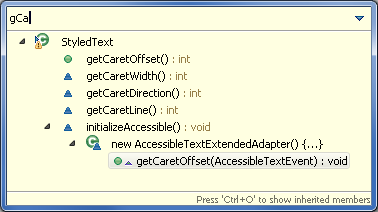
The * and ? wildcards still work, of course.for loopfor loop and needed access to the Iterator or to the loop index?
Now, you can just use a Quick Assist (Ctrl+1) to convert the loop:
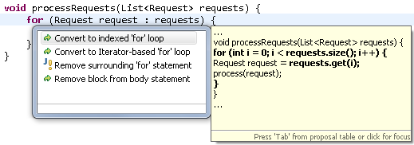
- Convert to indexed 'for' loop is available for expressions of array- and
List-based types. - Convert to Iterator-based 'for' loop is available for expressions of type
Iterable.
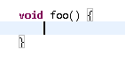
This can be configured on the Java > Editor preference page.
Also, the Navigate > Go To > Matching Bracket action (Ctrl+Shift+P) now works everywhere in a file. If a bracket is not selected before invoking the action, the action navigates to the nearest enclosing end bracket. On invoking the action a second time, it navigates to the corresponding start bracket. On the third invocation, the original selection is restored.
So far, a matching bracket was found when the caret was placed immediately after a bracket. Now, a matching bracket is found both when the caret is placed either immediately before or immediately after a bracket.
You can hover over a closing curly brace and see the source near the matching opening brace in a hover. This is helpful when you want to see the code near the start of a long code block. The hover also tells the number of lines in the code block.
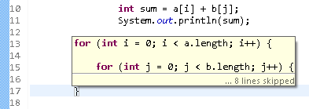
The hover is also useful to temporarily 'highlight' a short code block.
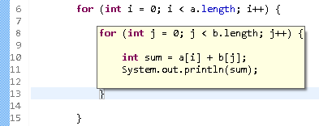
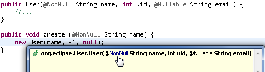
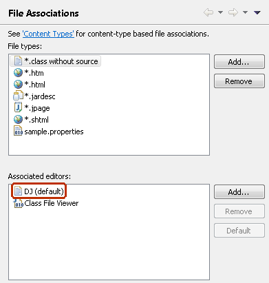
org.eclipse.jdt.ui.text.java.correction.ChangeCorrectionProposalorg.eclipse.jdt.ui.text.java.correction.CUCorrectionProposalorg.eclipse.jdt.ui.text.java.correction.ASTRewriteCorrectionProposal
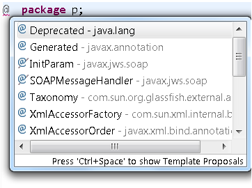
Java Compiler
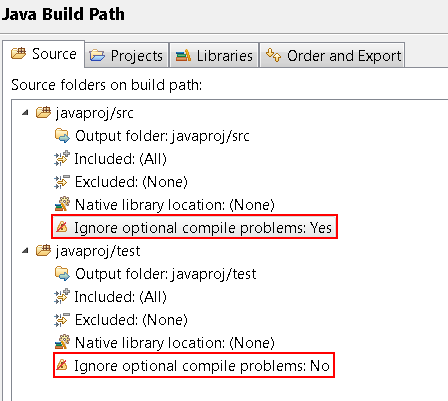
With this option set to Yes, JDT will suppress errors/warnings configured in the Preferences > Java > Compiler > Errors/Warnings page. This can be desirable for source folders that contain auto-generated classes or tests.
The compiler now separately checks two criteria for a switch statement to be complete:
- A switch statement on an enum should define one case statement for each of the enum's constants
- Each switch statement independent of type should define a default case.
By default the compiler warns for an enum switch where both criteria are violated:
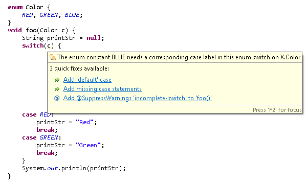
This warning is controlled by the option Preferences > Java > Compiler > Errors/Warnings > Incomplete 'switch' cases on enum. This option can be strengthened by selecting the new sub-option Signal even if 'default' case exists, in which case JDT will flag switch statements over an enum type which may have an enum value covered only through a default statement, but not directly through a case statement. When new enum constants are added, this option will help in detecting the switch statements that do not cover the new value.
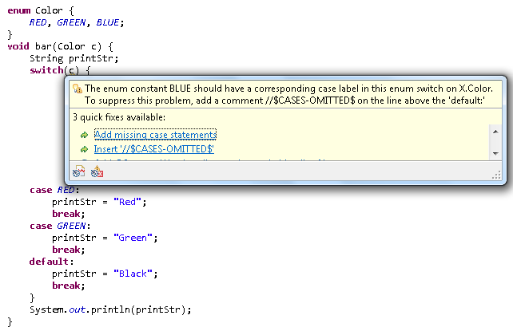
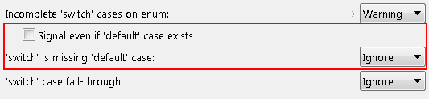
A second addition in the same section of the compiler preferences, Switch is missing 'default' case, controls whether the JDT will flag switch statements with a missing default case, because such a switch statement will be skipped entirely at runtime if an unexpected value occurs.
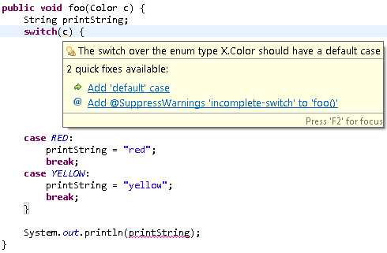
Note that in cases like the above, the warning also helps to understand another
error against the last statement:
"The local variable printString may not have been initialized"
is reported because clients could possibly call the method print(Color) with an
enum value that is not known at the time of compiling this method.
java.lang.AutoCloseable (compliance >= 1.7) and java.io.Closeable (compliance <= 1.6).
See here for background information.
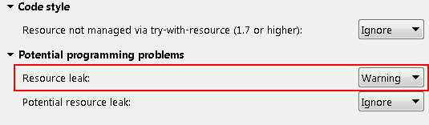
When the Resource leak option on the Java > Compiler > Errors/Warnings preference page is enabled,
the compiler will issue an error or a warning if the close() method is not invoked locally on a resource.
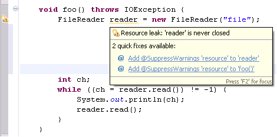
When you enable the Potential resource leak option on the Java > Compiler > Errors/Warnings preference page,
the compiler will issue an error or a warning if the close() method is not invoked locally on a resource
on all the execution paths.
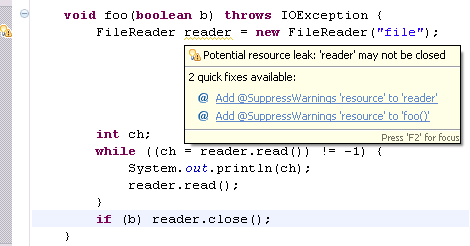
This analysis is less aggressive if a resource is shared between methods, possibly via a field, where any party accessing the resource could possibly issue the desired call to close(). In some cases (e.g.: passed as an argument to another method) the warning will be softened to only report a potential leak, in other cases (stored in a field) the analysis will be entirely silent.
Additionally the analysis recognizes certain cases as being practically unimportant. Some examples where the absence of a close() call does not trigger any error/warning are given below:
- Resource-less implementors of Closeable, such as StringReader.
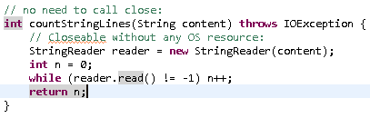
- Wrapping implementors of Closeable, such as BufferedReader, that simply wrap a resource-less Closeable, directly or indirectly.
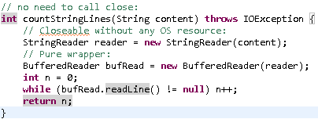
- Wrapped resources where any resource in the chain is (potentially) closed.

- -warn:all can be used to enable all compiler warnings
- -warn:resource can be used to enable resource leak warnings

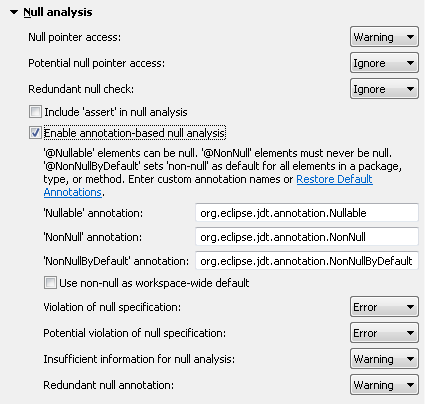
You can use either the default annotations bundled with JDT or use your own annotations
as null annotations. In addition to enabling the null analysis, the annotations need to be on the
Java build path of your project. The default annotations can be found in the org.eclipse.jdt.annotation JAR
in the plugins directory, which can be consumed as an OSGi bundle or plain JAR.
When annotation-based null analysis is enabled, JDT issues new diagnostics based on the nullness of a variable or a method return type as specified by a null annotation.
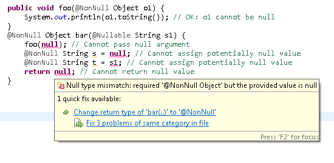
Similar diagnostics are also elicited when the value assigned/returned may potentially be null or has unknown nullness.
Overriding methods are also checked for correctness:
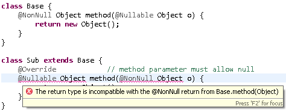
You can also use the @NonNullByDefault annotation to set a global default on an element (package, type, method) for all enclosed elements.
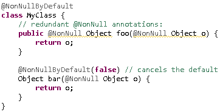
As a result of annotating method signatures, the existing intra-procedural null analysis has even more information because of user-specified annotations and thus provides better results. In the example below, the compiler would not have been able to evaluate the null status of parameter 'obj' without the null annotation (option Redundant null check must be enabled to see the warning).
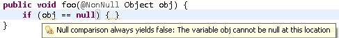
The new diagnostics are classified in three categories:
- Violation of null specification
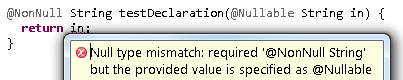Here, 'in' is not a legal return value because of the @Nullable annotation in its declaration.
- Conflict between null annotations and null inference
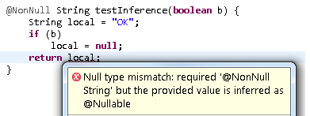Here, 'local' is not a legal return value, because flow analysis for the un-annotated variable 'local' infers that it can be null on some path.
- Unchecked conversion from non-annotated type to @NonNull type
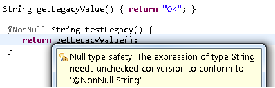Here, the return value from 'getLegacyValue()' may or may not be compatible to '@NonNull String'. Similar to converting a legacy raw type to a generic type, also here essential type information is missing since 'getLegacyValue()' has no @NonNull or @Nullable annotation.
Note: This is the first version of this feature. We are working on making this easier to consume in Java project setups. The implemented features are complete and tested, but e.g. support for annotating fields or APIs from third-party libraries is currently missing. An initial set of quick fixes is included which will be further improved in the future.
Also see here for background information.
-warn option,
where nullable, nonnull and nonnullbydefault are the fully qualified names of the annotation types to be used for null analysis. You can use nullAnnot alone
to use JDT's default annotations.
In addition, you can use the -nonNullByDefault token to globally use nonnull as the default when annotation-based null analysis is enabled. This implies that all types in method signatures without a null annotation are considered as specified non-null.
- When a package does not contain an '@NonNullByDefault' annotation in the package-info.java:
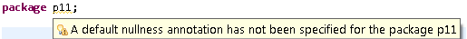
- When a type inside a default package does not contain a default nullness annotation.
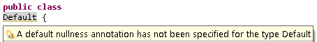
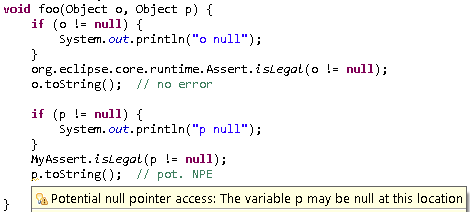
You can now tell JDT search to use pre-built indexes instead of having the compiler generate the indexes the first time a JAR is added to the classpath. This prevents indexing from occurring on the user's machine and lets the user obtain first search results faster.
You can specify the index file as a classpath attribute IClasspathAttribute.INDEX_LOCATION_ATTRIBUTE_NAME of the library.
See Help > JDT Plug-in Developer Guide > Programmer's Guide > JDT Core > Indexes for the Java search for more details.
Java Views and Dialogs
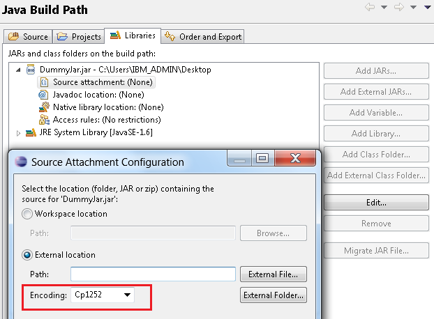
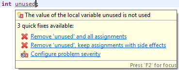
Now, an arrow highlights the selected item, and another arrow highlights the item under the mouse.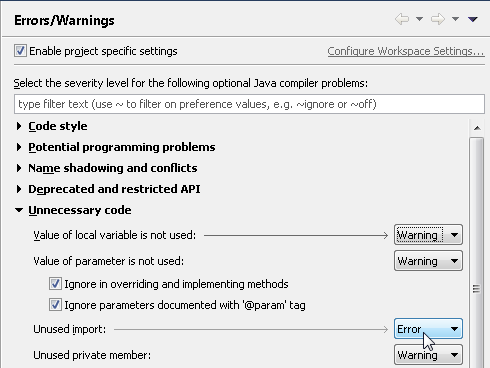
The highlighting also works on the PDE and API Tools preference pages.Properties File Editor
- Rename in workspace - renames the key in the properties file and updates all references
- Create field in '...' - creates the corresponding field in the resource bundle accessor class
- Remove property - deletes the property from the properties file and the field from the resource bundle accessor class
- Remove properties - deletes the selected properties from the properties file and the fields from the resource bundle accessor class
Debug
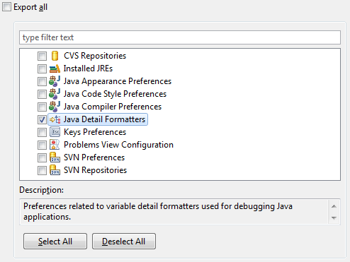
Showing monitor information can be turned on or off using the Java > Show Monitors view action within the Debug view.
Holding the Ctrl key while double-clicking (toggling) a breakpoint will cause the Properties dialog for that breakpoint to be displayed (on the Mac, use Command)
- Holding the Alt key while double-clicking (toggling) a breakpoint will enable / disable that breakpoint